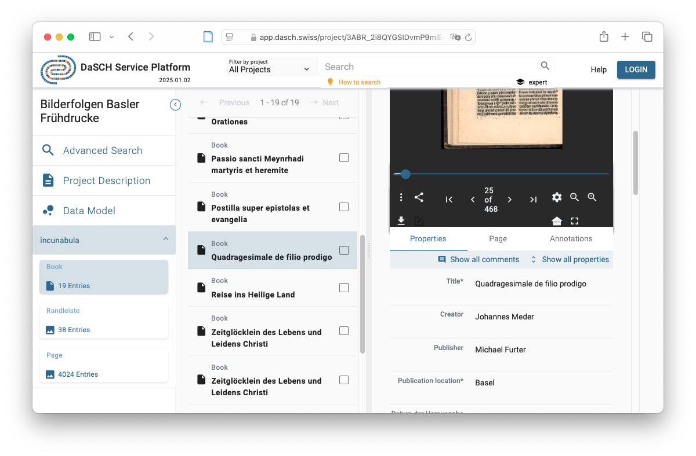

Presentación de la infraestructura DaSCH
José Luis Losada Palenzuela
DaSCH / RISE (Universidad de Basilea)
Humanidades Digitales: dificultades y nuevos horizontes en la investigación académica, Basilea, 21.05.2025
## ToC - DaSCH Overview - Data Models - Granularity - Examples (edition)
## What is DaSCH? - DaSCH - Swiss National Data and Service Center for the Humanities. - National infrastructure for Humanities’ research data. - Open data repository and virtual research environment. - Repository for long-term preservation and reuse of research data.
## Characteristics of DSP #### DaSCH Service Platform (DSP) - Focus on text data and bitstream data. - Persistent identifiers (ARKs) not only at dataset level but also at object level. - Editing of data possible at any time (changes ahead). - Providing access to data through APIs. - Display of data and search in generic web application: DSP-APP https://app.dasch.swiss.
 <br> <span class="fuente"><a href="https://ark.dasch.swiss/ark:/72163/1/0803/f6pSYFILX1OT1uqXBXotnA8">https://ark.dasch.swiss/ark:/72163/1/0803/f6pSYFILX1OT1uqXBXotnA8</a></span>
## Characteristics of DSP #### DaSCH Service Platform (DSP) - Use of a triplestore: data is stored in the form of graphs. - RDF (Resource Description Framework) is used to describe relations. - Queries are made using a subset of the SPARQL query language (Gravsearch) - An IIIF media server enables the display of images.
## Digital Scholarly Editions - TEI-XML's role as the core of digital scholarly editions - Reductionist, as it omits visualization and publication - Every DSE has implicit or explicit a data model
## DSP Specific Requirements #### How edition data is represented in DSP - RDF-based representation - **Data Model** (classes and properties)
<img style="width: 50%; box-shadow: none;" src="imagenes/dasch_datamodel_1.png"/>
<img style="width: 50%; box-shadow: none;" src="imagenes/dasch_datamodel_2.png"/>
## Minimal Data Model - Archiving the XML files with the desired basic metadata - What do I have: - Data export for external tools and systems: xml download - Direct citacion at object level via ARK - Versioning if decided to track the versions
<img style="width: 70%; box-shadow: none;" src="imagenes/dasch_xml.png"/>
<img style="width: 60%; box-shadow: none;" src="imagenes/dasch_datamodel_3.png"/>
<img style="width: 70%; box-shadow: none;" src="imagenes/dasch_gotthelf.png"/>
## How to do it #### Do it yourself - DSP-APP in a browser (manually) - Simple virtual research environment <br> <br> #### Mass import via DSP-TOOLS - Set of python scripts
## Conclusion - Archive granularity up to the project - Archive XML with selection of data of interest - Content is still preserved in the XML - Metadata, downloads and persistent identifiers
Browse DaSCH projects <br> <br> https://app.dasch.swiss
Search for projects at DaSCH Metadata Browser <br> https://meta.dasch.swiss <br> <br> Do You Want To Know More? <br> https://www.dasch.swiss/our-manuals <br> <br> DaSCH Service Platform Documentation <br> https://docs.dasch.swiss <br> <br> DSP source code and documentation <br> https://github.com/dasch-swiss <a style = "border-bottom: none" href="http://creativecommons.org/licenses/by-sa/4.0/"><img class="licencia" alt="License Creative Commons" src="https://i.creativecommons.org/l/by-sa/4.0/80x15.png"></a>